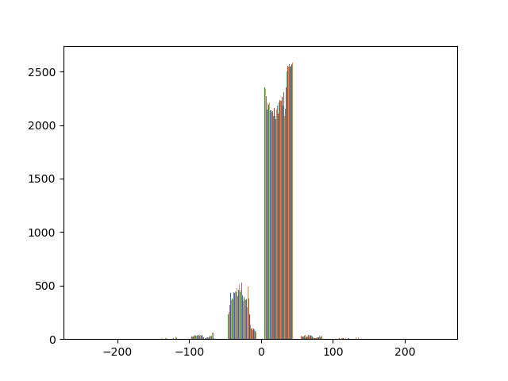
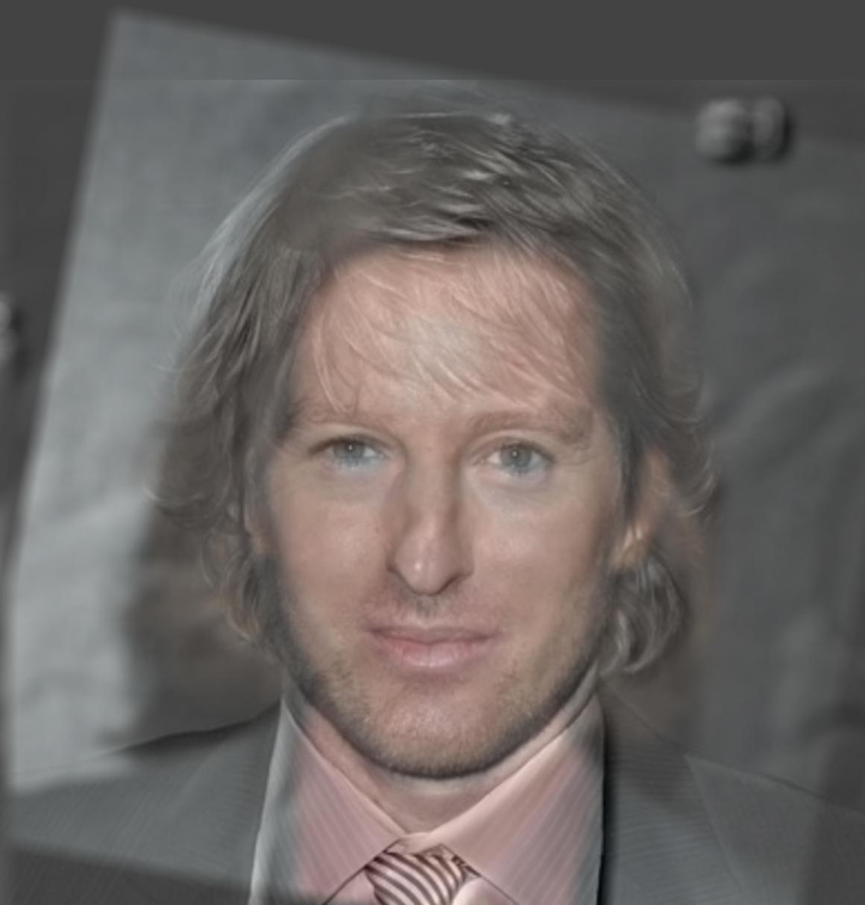
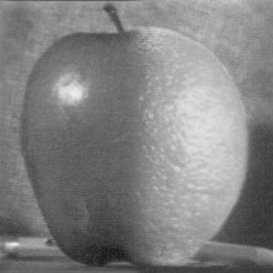
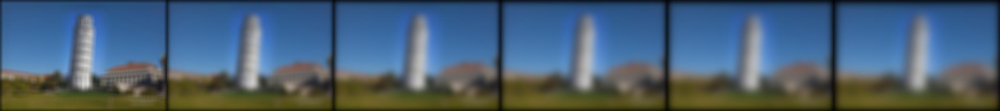
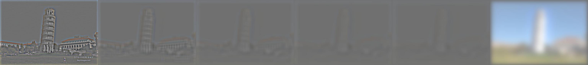

Fun With Filters and Frequencies!
Table of Contents
For this project, we are set to understand the information available in every image and how to manipulate it in order to make the image represent something else. To do this, we use, more importantly, derivative filters and Gaussian kernels to separate high and low frequencies. The results are really fun!
1 Fun with Filters
1.1 Finite Difference Operator
Using the cameraman picture available in skimage.data, we apply the humble difference operators given in the project spec to calculate the derivative in both axis, i.e. convolve the image pixels using the operators. The operators take into consideration the pixel value difference between one pixel and its predecessor. Once we have both axis differential map, we, then, turn the values discrete relative to some threshold. I used the value 20, meaning that every absolute value greater than 20 is considered a border.
python main.py 1.1 -f ./cameraman.jpg -o ./regular_convolve_edge.jpg
 →
→ 
The results are what we expect: a border image with a lot of noise, since 20= is a low number. This means that we need a way to remove the spread noise.
1.2 Derivative of Gaussian (DoG) Filter
Since we want to remove the noise, we can use a Gaussian filter to do so. I decided to use thee following parameters for the kernel: \(size = 20, σ = 1.5\).
python main.py 1.2 -f cameraman.jpg -o blurry_border.jpg
The results follow. Gaussian filtered image applied to the partial derivative function (LEFT) and DoG Gaussian filter applied to the cameraman image (RIGHT).
→ 
What has changed? As expected, the noise is gone and the borders are smooth. This is due to the fact that the Gaussian filter removes the high frequencies that cause the noise in a somewhat smooth surface such as the grass in the image. From what we learnt in lecture, both results (Gaussian Filter + Derivative and DoG(Gaussian Filter + Derivative)) are the same!
1.3 Image Straightening
To straighten an image, we can use the derivative map to find perpendicular angles to the axis. Once we have the number of perpendicular axis, we can find the angle that maximizes it. However, we still need to disregard the border, so we have to crop the image in order to process only the actual image content. I decided to divide the image by 5 and process it this way. Also, we need to have a interval of values which we should consider as perpendicular. My interval is [80, ..., 100] degrees. Once we do this processing, we get the following results.
python main.py 1.3 -f facade.jpg -o facade_fixed.jpg python main.py 1.3 -f bridge.jpg -o bridge_fixed.jpg python main.py 1.3 -f guitar.jpg -o guitar_fixed.jpg python main.py 1.3 -f pisa_crook.jpg -o pisa_fixed.jpg python main.py 1.3 -f CN.jpg -o CN_fixed.jpg
 →
→
→
→
 →
→
→

As expected, since the algorithm is pretty simple, we have the straightened image for almost all the results. For the bigger images such as facade.jpg, even the straightened image has much less perpendicular values than regular values from what we can see in the histogram. As we can also see, the CN Tower image didn’t straighten up the image. This is due to the fact that, when calculating the image vertical and horizontal axis, we crop it to avoid the borders, which can make our problem tricky when rotating the image. This way, we are actually evaluating an area composed by the towers circular head, which doesn’t have a straight position reference.
2 Fun with Frequencies!
2.1 Image Sharpening
To sharpen an image, we just have to calculate the low frequencies in order to find the high frequencies and add them to the image. This is achieved by creating a Laplacian of Gaussian kernel and summing it to the image. To do that, we create an identity kernel, double it and subtract a Gaussian kernel (Image + (Image - LowFrequencies)). Using \(size = 20, σ = 20\), we have the following results:
python main.py 2.1 -f taj.jpg -o sharp_taj.jpg python main.py 2.1 -f CN.jpg -o sharp_CN.jpg python main.py 2.1 -f guitar.jpg -o sharp_guitar.jpg python main.py 2.1 -f sharp_guitar.jpg -o sharper_guitar.jpg python main.py 2.1 -f sharper_guitar.jpg -o sharper_guitar.jpg python main.py 2.1 -f sharper_guitar.jpg -o sharper_guitar.jpg
2* -
-
2* -
2* -
2* -
→→
As we can see, the images only seem to have less color. This is due to the fact that the images are normalized as saved. Since they have larger absolute values, the low frequency values are normalized to a smaller interval. This means that the high frequencies are, thus, more represented as it is shown in the last guitar image, which we sharpened 3 times and, now, can only see the borders.
2.2 Hybrid Images
To create the hybrid images, we align the two pictures and add one’s low frequencies with thee other’s high frequencies. Every image has different signals, meaning that we won’t have an optimal σ for a kernel that works every time. I had the following results for my implementation of the method:
python main.py 2.2 -f ./DerekPicture.jpg -s ./nutmeg.jpg -o ./dn_color.jpg -m 20 -g 30 python main.py 2.2 -f ./DerekPicture.jpg -s ./nutmeg.jpg -o ./dn_mixed1.jpg -m 20 -g 30 --gray_one python main.py 2.2 -f ./DerekPicture.jpg -s ./nutmeg.jpg -o ./dn_mixed2.jpg -m 20 -g 30 --gray_two python main.py 2.2 -f ./DerekPicture.jpg -s ./nutmeg.jpg -o ./dn_gray.jpg -m 20 -g 30 --gray_one --gray_two python main.py 2.2 -f ./tiger.jpg -s ./dog.jpg -o ./td_color.jpg -m 4 -g 6 python main.py 2.2 -f ./tiger.jpg -s ./dog.jpg -o ./td_mixed1.jpg -m 4 -g 6 --gray_one python main.py 2.2 -f ./tiger.jpg -s ./dog.jpg -o ./td_mixed2.jpg -m 4 -g 6 --gray_two python main.py 2.2 -f ./tiger.jpg -s ./dog.jpg -o ./td_gray.jpg -m 4 -g 6 --gray_one --gray_two python main.py 2.2 -f ./wes.jpg -s ./owen.jpg -o ./wo_color.jpg -m 20 -g 20 python main.py 2.2 -f ./wes.jpg -s ./owen.jpg -o ./wo_mixed1.jpg -m 20 -g 20 --gray_one python main.py 2.2 -f ./wes.jpg -s ./owen.jpg -o ./wo_mixed2.jpg -m 20 -g 20 --gray_two python main.py 2.2 -f ./wes.jpg -s ./owen.jpg -o ./wo_gray.jpg -m 20 -g 20 --gray_one --gray_two python main.py 2.2 -f ./jim.jpg -s ./dwight.jpg -o ./jd_color.jpg -m 10 -g 5 python main.py 2.2 -f ./jim.jpg -s ./dwight.jpg -o ./jd_mixed1.jpg -m 10 -g 5 --gray_one python main.py 2.2 -f ./jim.jpg -s ./dwight.jpg -o ./jd_mixed2.jpg -m 10 -g 5 --gray_two python main.py 2.2 -f ./jim.jpg -s ./dwight.jpg -o ./jd_gray.jpg -m 10 -g 5 --gray_one --gray_two
Please select 2 points in each image for alignment.
This hybrid image has worked fine. Looking from far away you see Derek and from close by you see an anthropomorphic cat. I used \(σ₁ = 20, σ₂ = 30\)
This is my favorite result. Considering the use of this for two different people can give us interesting output. You can clearly see Owen Wilson close by while seeing a figure that doesn’t resemble to Owen from far away (Wes Anderson).
This result also looks really good, but it has one flaw. From far away, we can see a ferocious tiger. From close by, we see a little puppy. However, since the tiger has strong high frequency signals in its stripes, the blurry tiger, for the given sigma also has a big influence in the high frequency spectrum, meaning you can see the tiger really well close by. This makes the result confusing, since we can see the dog’s and the tiger’s nose and eyes. Although the tiger looks cute with a sticking out tongue, this output isn’t a proper hybrid image. We’ll understand this better once we have its Laplacian stack.
This image also had a great result. We can clearly see Dwight with his humongous glasses from close by, while also seeing Jim with his cheeky smile from far away.
2.2.1 Using Colors!
To use colors, we simply apply the filters to all the color channels! These are the results:

I think that using color in both images is what returned the best outputs, principally on the human over human pictures (Owen + Wes, Dwight + Jim), since they match on color patterns (Skin, eyes, nostrils, …).
2.2.2 Fourier Space Analysis
My favorite result is the mix between Owen Wilson and Wes Anderson, both using color:
 +
+
We, now, compute the 2D Fourier transform for booth images:
wes = plt.imread('./wes.jpg')/255. owen = plt.imread('./owen.jpg')/255 plt.imsave("fourier_wes.jpg", np.log(np.abs(np.fft.fftshift(np.fft.fft2(rgb2gray(wes)))))) plt.imsave("fourier_owen.jpg", np.log(np.abs(np.fft.fftshift(np.fft.fft2(rgb2gray(owen))))))
Wes (Left), Owen (Right)
gauss = gaussian_kernel(25, 20) blurry_wes = convolve2d(rgb2gray(wes), gauss) sharp_owen = sharpen(owen, 25, 20) plt.imsave("fourier_wes_filtered.jpg", np.log(np.abs(np.fft.fftshift(np.fft.fft2(rgb2gray(blurry_wes)))))) plt.imsave("fourier_owen_filtered.jpg", np.log(np.abs(np.fft.fftshift(np.fft.fft2(rgb2gray(sharp_owen)))))) plt.imsave("fourier_wo.jpg", np.log(np.abs(np.fft.fftshift(np.fft.fft2(rgb2gray(wes_owen_color))))))
Wes after Gaussian filter (Left), Owen after Laplacian on Gaussian filter (Right)
Hybrid image product
We can see, from the Fourier space filtered images and their sum, that, once they are added to each other, the low frequency image has its gaps filled by the other, and the high frequency has its low frequency spectrum intensified by the other.
2.3 Gaussian and Laplacian Stacks
Once we can use the Gaussian filter, we can create both stacks as it was taught in lecture, but adapt them so they will work on the last question, removing the actual image from the Gaussian stack. The Gaussian stack going from the first filtered image to level 6 filtered image and the Laplacian stack going from the Image - first Gaussian filtered image to the difference on the bottom of the Gaussian stack images, finalizing it with what was left of low frequencies on the image. The output image is on the format (Top → Bottom).
python main.py 2.3 -f wo_color.jpg -o wo python main.py 2.3 -f lincoln.jpg -o lincoln python main.py 2.3 -f td_color.jpg -o td
We can see how Owen is shown very clearly in the all through the Laplacian stack as Wes is shown all through the Gaussian one.

Here, it is clear that Lincoln is shown all through the Gaussian stack and the woman is very clear on the top of the Laplacian stack.
Now, the fault in this hybrid image is understandable as the tiger is what is predominant in all the levels of both stacks.
2.4 Multiresolution Blending
Since our stacks are already adapted for this problem, we only have to use the algorithm given by the paper on the spec. Given 2 images and a mask, we join the two images in all Laplacian levels using the Low Pass filtered mask. To create the irregular masks used for the Pisa tower and Tom Hank’s eye, I used GIMP (GNU Image Manipulation Program). I got the following results:
python main.py 2.4 -f ./apple.jpeg -s ./orange.jpeg -t ./apporange_mask.jpg -o ./apporange_gray.jpg --gray_one python main.py 2.3 -f apporange_gray.jpg -o apporange_gray python main.py 2.3 -f apporange_mask.jpg -o apporange_mask python main.py 2.4 -f ./pisa_aligned.jpg -s ./sather.jpg -t ./pisa_aligned_mask.jpg -o ./pisather_gray.jpg --gray_one -m 50 python main.py 2.3 -f pisather_gray.jpg -o pisather_gray python main.py 2.3 -f pisa_aligned_mask.jpg -o pisather_mask python main.py 2.4 -f ./hanks_eye_aligned.jpg -s ./hanks.jpg -t ./hanks_eye_mask.jpg -o ./weird_hanks_gray.jpg --gray_one -m 20 python main.py 2.3 -f weird_hanks_gray.jpg -o weird_hanks_gray python main.py 2.3 -f hanks_eye_mask.jpg -o weird_hanks_mask


 
We can see how smooth the images are joined once they are merged in every level! This makes so many fun things possible!
2.4.1 Using Color!
Using color, the results are even better! The sather tower is now the leaning tower of Pisa and Tom Hanks is a freak!
python main.py 2.4 -f ./apple.jpeg -s ./orange.jpeg -t ./apporange_mask.jpg -o ./apporange.jpg python main.py 2.3 -f apporange.jpg -o apporange python main.py 2.4 -f ./pisa_aligned.jpg -s ./sather.jpg -t ./pisa_aligned_mask.jpg -o ./pisather.jpg -m 50 python main.py 2.3 -f pisather.jpg -o pisather python main.py 2.4 -f ./hanks_eye_aligned.jpg -s ./hanks.jpg -t ./hanks_eye_mask.jpg -o ./weird_hanks.jpg -m 20 python main.py 2.3 -f weird_hanks.jpg -o weird_hanks


3 Interesting Project Aspects
In my opinion, this assignment had so many interesting insights to image representation. Using our perception of images frequencies to manipulate them and make them look as something unnatural (Hybrid images and Multiresolution blending) is what caught my full attention to it and made me reach out for the best results possible. Also, the ease with which we can add on operations to a preprocessed kernel is really cool in terms of efficiency and might be a useful tool inn future research.